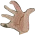

Nicole Eisenman
American, b. 1965, Verdun, France, based in New York, New York
“Eisenman says that in every mosh pit there’s always a spoiler, someone going against the grain, someone who is running around the periphery clockwise when everyone else is going counter-clockwise. This is the kind of double proposition that fuels Eisenman’s work as an artist. Her work pits the performative against the purely material. Her exhibitions are physical manifestations of the carefully built up vs. the radically torn apart. To see an Eisenman show is to some extent to participate in it. Her audience is immersed in shifts of scale and a physicality that cannot be captured in reproduction. Seduced, even overwhelmed, by her curious stories, we are drawn into Eisenman’s territory in a state of altered consciousness, with emotions ranging from titillation to sorrow to excitement to rapture. Eisenman choreographs, interrogates, and then stands back and watches the action. The ideal vs. the slapstick! The awesome vs. the stupid! Form vs. formlessness! Privacy vs. spectacle! Control vs. chaos! The fucker vs. the fucked! Choreography vs. hypnosis! Remembering vs. forgetting! And like rock concerts and mosh pits, and great art, the point of all this is transformation, transcendence of the present moment through momentary forgetting, the rapturous dissolution of self, entering a new realm where escapism and invention are both a procedure and an attraction.”
—Amy Sillman
Alice in Wonderland
, 1996
Spring Fling
, 1996
Commerce Feeds Creativity
, 2004
Coping
, 2008
Beer Garden with Ash
, 2009
Sunday Night Dinner
, 2009

The Triumph of Poverty
, 2009
The Drawing Class
, 2011
Sloppy Bar Room Kiss
, 2011
Achilles Heel
, 2014
Another Green World
, 2015
Northern California Potter Woman
, 2015
Captain America
, 2016
Morning Studio
, 2016
Shooter 2
, 2016
Subway 2
, 2016
Watchers
, 2016